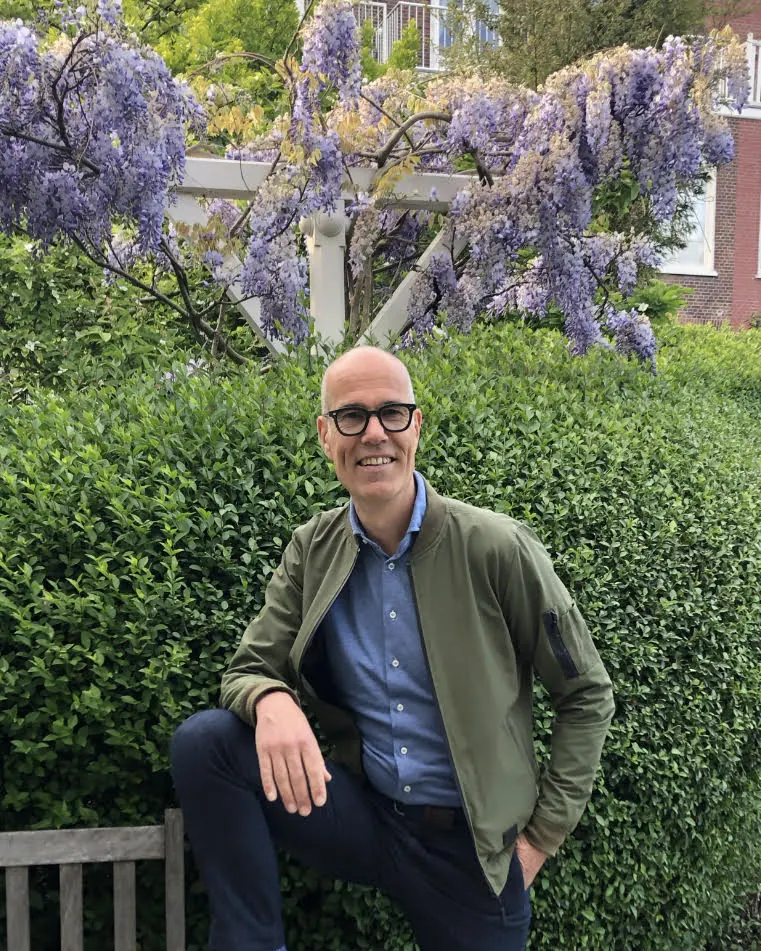

Advisor | Coach | Interim manager | Speaker
For people who want to work with energy and enjoyment. For organisations that want to stand out.
I help organisations achieve behaviour and culture change so that health and vitality become a fixed part of work. With an integrated approach to lifestyle, culture and leadership that is data-driven and based on science. From my own experience and with a business perspective.
Or get in touch directly: +31 6 5168 6865 walter@waltermontenarie.com
All services are available in English, German and Dutch.

Relevant experience
As a manager and director I have led small and large teams at companies including Springer Nature, Sdu and Noordhoff.
As an advisor, leadership coach and health coach I have worked on assignments for clients including KLM, the Dutch House of Representatives, Dura Vermeer, the City of Rotterdam, Rijkswaterstaat, the Ministry of Economic Affairs and Climate Policy, Radboud University and Sweco.
Services
I improve the work ability of employees and the productivity and continuity of organisations by addressing behaviour, culture and leadership together.
-
Strategic advice
Together we develop an integrated vitality and health policy and I guide the culture change that goes with it. The aim is less work pressure and higher employability with a business case that shows what it delivers.
For Boards, HR directors and management teams of medium-sized and large organisations
-
Coaching
Team and leadership coaching. Managers set the example when it comes to healthy work. I guide them in that role.
Health coaching. Individual programmes aimed at behaviour change around stress, burnout and lifestyle.
For Managers, team leaders and key people in organisations
-
Training
Practical training for managers and teams, based on scientific models and directly applicable at work. On site or online.
- Reducing work pressure. 2 sessions of 2 hours, up to 50 participants, € 1,295 per group
- Reduce stress, increase engagement. 2 half-day sessions, 6 to 15 participants, € 1,495 per group
- Culture change with Kotter's 8-step model. 4 half-day sessions, 6 to 10 participants, € 2,995 per group
Prices exclude VAT and travel costs.
For Managers, teams and HR
-
Workshops
Interactive inspiration sessions on vitality, stress reduction, behaviour change, nutrition, metabolic health, sleep and exercise. Bookable as a single session or as part of a vitality programme.
- Inspiration session. 1 hour, 10 to 50 participants, € 795 on site or € 595 online
Prices exclude VAT. On-site sessions exclude travel costs.
For Managers, employees and teams
-
Speaking
Talks on sustainable employability, work engagement and vital leadership. With science, figures and my own experience.
- Keynote. 30 to 45 minutes
- Interactive talk. 45 minutes to 1 hour
- Webinar, moderator or panel member
€ 995 excluding VAT and travel costs.
For Conferences, management days and HR events
-
Business development
With more than thirty years of experience in B2B sales and marketing I advise and support providers of lifestyle and health coaching and health tech solutions in entering and growing the Dutch business market. I know the buyers, their questions and their procurement processes.
For Growing Dutch and international health scale-ups and start-ups
-
Interim management
Temporary management roles in areas such as HR, occupational health, vitality or commerce.
For Organisations with a temporary capacity gap or in a transition phase
Approach
With the knowledge of an advisor, the skills of a coach and the business perspective of a director I work towards a lasting result. Six steps build on each other.
Analysis
Data analysis and in-depth interviews with managers, occupational health staff, HR and employees.
Insight
The results presented in a compact report.
Awareness
A presentation creates awareness among the board, managers and employees.
Knowledge
Sharing evidence-based knowledge strengthens awareness and lays the foundation for behaviour change.
Skills
Turning awareness and knowledge into practical skills.
Behaviour change
Together these steps lead to a lasting result.
In training I use two well-researched models: the Job Demands-Resources model to reduce stress and increase engagement, and Kotter's 8-step model as a guide for culture change.
Clients I have worked for include
From aviation and construction to government and education.
- KLMAviation
- Dutch House of RepresentativesCentral government
- Dura VermeerConstruction and infrastructure
- City of RotterdamMunicipality
- RijkswaterstaatCentral government
- Ministry of Economic Affairs and Climate PolicyCentral government
- Radboud UniversityEducation and research
- SwecoEngineering consultancy

About me
I am Walter Montenarie. I have more than 30 years of experience where health coaching, commercial management, organisational development and strategy meet.
For the past six years I worked at the Health Coach Program as commercial director, health coach and senior strategic advisor. I set up evidence-based health programmes and implemented them at large companies and government organisations.
Before that I held commercial leadership roles at EDIA and Noordhoff and managed teams at Sdu and Springer Nature.
In 2010 I had a burnout myself. During my recovery I discovered how important the balance between mental resilience and physical health is. Since then I have helped others to live and work healthier and with more enjoyment. I trained as an HCP health coach so I can translate the science of lifestyle medicine into what works in practice.
I work from The Hague for Dutch and international organisations.
Contact
Curious what I can do for your organisation? Book a free 30-minute call or get in touch another way.
- Email walter@waltermontenarie.com
- Phone +31 6 5168 6865
- LinkedIn linkedin.com/in/montenarie
- Location The Hague, the Netherlands
My articles and tools are in Dutch. You can find them on the Dutch site.